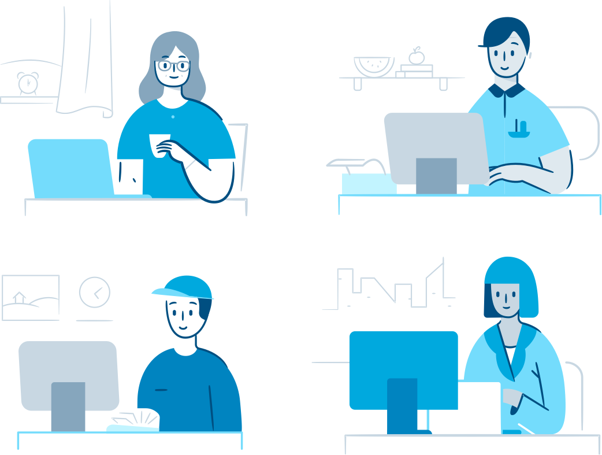
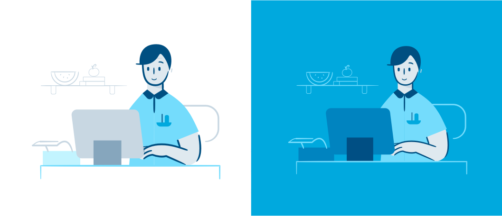
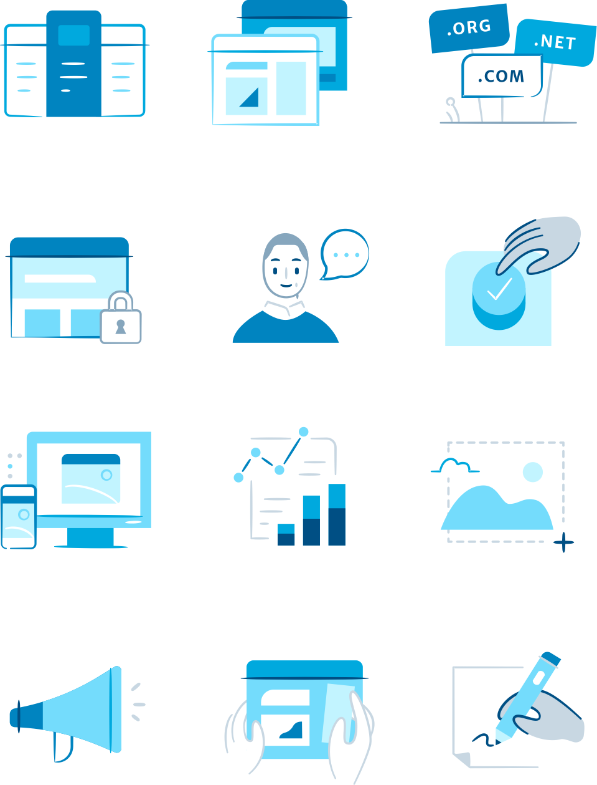

WordPress: Inclusion matters
Building an inclusive and representative illustration brand
Quick scenario: You're on your phone, going through the onboarding flow for a new app you just downloaded. Helpful illustrations appear, guiding and educating you through the process. Now hold up: are the characters in these illustrations diverse or mainly white? Do they seem to be young tech-oriented millennials, mostly men?

I love that illustrations have become such a key part of the tech branding landscape. But here's an observation: tech illustrations often feature the same sets of things: young, white people (usually men), surrounded by gadgets, with a cup of coffee, in a beautiful tech world. For consumer-oriented products, this creates an incredibly limiting and exclusive brand image, unless you are solely targeting city-dwelling, coastal tech millennials.
One important way we can address this is by creating marketing and product imagery that is more representative and inclusive.
When the WordPress design team asked me to develop their illustration brand and 60+ product illustrations, these values were a major focus of the project, especially as part of their mission to democratize publishing.
Starting blocks
Building a character set
So, how can inclusion and representation be expressed through character design and illustration voice? When you begin with these principles as cornerstones of your brand, rather than tacking them on at the end, they manifest in the design process in straightforward and thoughtful ways.
Starting out, we wanted to approach the design of the characters to include different body types. Because our characters are stylized and not anatomically precise, I expressed this abstractly — from square, angular blocky figures to rounded, curvier ones.
Additionally, just as every branding process includes determining a color palette, I made built a range of complementary skin tones into the palette as well, instead of relying on white as the default skin tone color. To further include racial and cultural diversity, we explored a range of physical features — face shapes, hair style, expressions, etc.

This may all seem purely symbolic, but Diógenes Brito hits the nail on the head about what this optically communicates in his write-up about using a brown hand in Slack's "Add to Slack" button feature.
As we developed this further, the team continued to challenge any preconceived ideas and biases about what inclusion meant — I learned so much through their invaluable feedback. Mel brought up gender fluidity, and I drew gender-neutral characters as well. John also made great points about how depicting your typical illustrated "latte / laptop world" comes off as very exclusionary a huge part of their audience: mom and pop shops, small medium businesses, bootstrapped entrepreneurs, etc.
“Another challenge to note, that is common in the tech industry, is a bias towards believing that our users are on a desktop machine or using a mobile phone in some workspace or coffee shop or “beautiful” setting of a studio. This notion doesn’t match the day-to-day people trying to get their jobs done as non-tech workers.”
— John M.
With that in mind, I developed a series of lightweight line-based backgrounds, illustrating a variety of roles and settings, from woodworking workshops to a living room — careful to avoid only depicting tech workspaces. Further dimensions pushed in exploration included occupation, technical familiarity, attire, age, lifestyle, socioeconomic status, etc.

Header illustrations: Characters interacting with the UI, "building" their sites
Using these principles, I extended these explorations into a system of characters and avatar templates that the team can pull from in the future, from large to small, for contexts ranging from headers to spot illustrations.

Large: Full-body design of different characters
Medium, 404 error — replacing the previous beloved Loch Ness illustration
Medium: Character vignettes
Small: Character avatars

Tiny: spot illustrations
Developing the visual language
“A line is a dot that went for a walk”
The team also asked me to establish the visual language and style of these illustrations, a brand for "real people" — one that is engaging, knowledgeable, and imaginative, but never patronizing or inaccessible. Part of the ask was to use the existing simple and geometric illustration style as a starting point. Given that the team has never had an intentionally set illustration style before (but many years' worth of illustrations on existing marketing sites and collateral), this new style had to be an evolution of what was already in use.
One of my early explorations, an interplay between playful, expressive linework and familiarly solid shapes, intrigued the team. I took my own experiences blogging on WordPress all the way back from high school (I was a major Power User of the teenage blogger variety) as an inspiration point: there is something in this expressive linework that is akin to a dot going for a walk, like the on-the-fly aspect of blogging. It feels hand-drawn, imperfect, and approachable — yet finished and polished, like a professional doodle.

The progression of balancing shapes and linework
With feedback from the team, this approach was refined down to look less cartoon-ish and a bit more mature, as a huge part of WordPress's audience is comprised of businesses. The above shows a bit of that progression in balancing line against shape. Shapework is used to groud most of the composition, and linework adds in detail as well as a bit more personality.
We also realized that whenever possible, extra details connoting a personal touch go a long way in humanizing these illustrations. For instance, adding in a character interacting with a UI resulted in a far more interesting visual than that of a static computer. I then documented a set of guidelines around the style somewhere along the right-hand, solidly-filled side of this spectrum, so as to allow illustrations to more firmly hold their own weight against UI.

In use across the product
The goods
I extended this style across spot illustations, badges, and devices using these very principles! One thing I love about this style is that it is extremely versatile; given the context, we could switch from blockier shapes to singing linework, and because of that, can also adapt well against both light and dark backgrounds.



It's been exciting to see these illustrations start to roll out in the product, especially given the reach that WordPress has across millions of websites.

Thanks
This project was a true joy to work on! One of my first experiences learning how to design and develop was with my first WordPress blog, back in high school. Friends can attest that I was a true Power User, a Teenage Girl Blogger (that's what I called myself); I wrote everyday and WordPress is one of my favorite websites. As such it was really neat to be able to come back almost a decade later and contribute in the form of illustrations and branding — full circle, almost.
This was also an incredible learning experience with respect to the lessons in inclusivity. It's by no means a finished product or a checkbox to tick off and forget about; it's a constant work in progress, and I'm happy to have grown along this spectrum.
As the illustrator, I closely worked with designers Joan Rho, Kjell Reigstad, & Ballio Chan
Special thanks to the incredible WordPress design team!